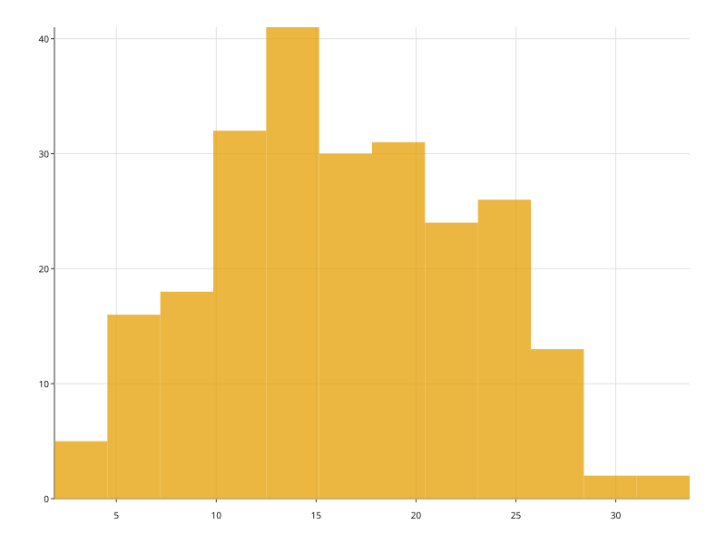

histplot
수치 한 컬럼을 구간으로 나눠 각 구간에 든 행 수를 막대로 그린다.
- 데이터
- x: 수치 · hue(선택): 아무 타입 · y 는 받지 않는다(높이는 개수다)
데이터
import random
import svgplot as sp
_rng = random.Random(7)
WAIT = {
"대기분": [round(_rng.gauss(12, 4), 1) for _ in range(120)]
+ [round(_rng.gauss(20, 5), 1) for _ in range(120)],
"창구": ["일반"] * 120 + ["우선"] * 120,
}
예시
기본 — bins="auto" 가 구간 폭을 고른다

sp.histplot(WAIT, x="대기분")
bins= 에 정수를 주면 그 수만큼 나눈다

sp.histplot(WAIT, x="대기분", bins=12)
bins= 에 전략 이름을 줄 수도 있다
sp.histplot(WAIT, x="대기분", bins="sturges")
hue= 그룹은 하나의 구간 경계를 공유한다
sp.histplot(WAIT, x="대기분", hue="창구")
메모
- bins= 는 정수 또는 전략 이름을 받는다 — auto·fd·doane·scott·rice·sturges·sqrt. 전략은 numpy 의 것을 그대로 다시 구현한 것이라 경계가 numpy 와 비트 단위로 같다.
- hue= 를 주면 그룹들이 하나의 구간 경계를 공유한다. 그래야 막대 하나가 뜻하는 양이 그룹마다 같아 높이끼리 견줘진다.
- 정수 bins= 는 10,000 에서 막는다. 그보다 많은 막대는 캔버스 폭에서 한 픽셀 아래로 내려간다.
- 높이가 개수이므로 y 컬럼이 없다. 값의 분포를 곡선으로 보려면 kdeplot, 누적으로 보려면 ecdfplot 을 쓴다.